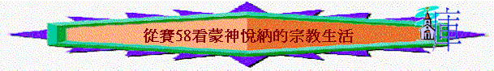

祈禱開始
引言
你認為一個有好靈性的基督徒，應有甚麼表現？
今日我們從賽58中看合神心意的子民在宗教上應有甚麼表現
一.表面敬虔的表現
∼讀經：賽58:1-2
1.
在第1節中，神透過先知責備誰？雅各家指誰？
2.
責備他們甚麼？
3.
但在第2節中，我們看到他們的表現好不好？(若單看第2節)
4.
有甚麼好的地方？若一個基督徒真能做到以上表現，你會給他甚麼評價？
5.
你羡慕第2節那一方面？
二.實質敗壞的表現
∼讀經：賽58:3-5
1.
第3節題到「禁食」，何謂「禁食」？當時的人為何要禁食？有人說賽58章的背景是北國以色列已滅亡，南國正受到外邦入侵攻擊威脅，若是真的，他們想禁食得甚麼？
2.
若一位信徒，時常禁食祈禱(為神的家)，你欣賞他嗎？
3.
從58:3、4中，我們看到神欣賞他們以上敬虔表現嗎？為甚麼？
4.
他們有甚麼不好的表現？
5.
你看完他們58:1-2表現，也看到58:3-4的表現，再一比較，你會對他們有甚麼評價？
6.
在現實生活中，有否遇到類似以上選民的信徒？試分享
三.神所喜悅的敬虔
∼讀經：賽58:6-9,13-14
1.
神「所揀選的禁食」代表甚麼？是否講真實的禁食？
2.
神悅納真正的禁食是甚麼？
3.
「鬆開兇惡的繩」指甚麼？「解下軛上的索」又指甚麼？
4.
何謂「體恤自己的骨肉而不掩藏」？
5.
總結58:6-7，人應怎樣對身邊的人？
6.
人若這樣去行，神會怎樣賜福？
7.
你有沒有遇到一些信徒，有以上的表現，令你很深刻的？
8.
在58:13題及選民又要有甚麼表現？從先知對他們所說的話，他們可能在安息日中犯了甚麼事情？
9.
若1-10分給自己評分(1最低，10最高)，你對主的尊重有幾多分？為甚麼？
10.
人若尊重聖日，他會有甚麼蒙福地方？
總結：在今次查經中，你最大的得著
祈禱